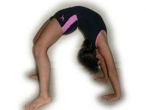

< < < Back
A Regimen For Recovering Injuries To Your Core – Return Of Kings
A couple of weeks ago, I was perusing the comments section of an article, when a reader made a request of me. He stated that he had suffered a severe injury to his back: two ruptured lumbar discs which are well on their way towards healing. However, the real bane of his experience was the soft-tissue damage—muscle spasms and a massive loss of strength and flexibility in his core, back, glutes, and hamstrings.
He then asked me, your fitness trainer, for some advice on how to recover from this. Being that I have only recently recovered from an injury myself (albeit to my foot rather than my core), and I emphasize core training as second only to training the forearms and hands, I feel that I might be able to give some insight on how to gradually regain your strength and mobility.
1. Get Medical Permission First
This goes without saying, but you shouldn’t train the injured area until you have explicit medical permission from a doctor. I understand that muscular and joint atrophy are a very depressing phenomenon, and you want to get back into the fray and build up your strength as soon as possible, but it would behoove you to be safe so that you prevent re-injury.
2. Calisthenics
To begin with, I would recommend working through the entire bridge series, which I have long held is the best thing you can possibly do for your back, if not your core in general. Begin with training the short bridges, which will do much to “unlock” your hips. Then move into the half bridge, full bridge, and, eventually when you get stronger and in better shape, begin doing the stand to stand bridges.
Some of the other fundamental calisthenic exercises will serve to strengthen the core, such as the push-up, squat, hanging leg raise and pull-up (the handstand doesn’t work the core much against the wall, but the free handstand does. I would not recommend doing a free handstand until you’ve worked your way back up to a decent standard of fitness), which give some auxiliary work to the core in addition to the chest, back, and shoulders that most would think would be targeted in those exercises.
As with the bridge, the man recovering from injury should start at the very first of these exercises, no matter how embarrassing it may seem to him. In other words, even if you were capable of doing a one-handed push-up before the injury, you should start with the knee push-ups and work your way back up to the one-handed pushup. Not only have your muscles atrophied, but the neural connections and motor units have also atrophied as well, and need to be gradually renewed. The same applies to the pull-up, squat, and hanging leg raise—start with the easiest steps in the chain of progressions, and then work your way back up to your former greatness.
Once you’ve obtained medical permission, gradually begin increasing the difficulty and length of your workouts. The exercises given in this article should be done with the same “rules” that you would do with any other exercise: resistance training and heavy stretching should be done on separate days, and calisthenics and weights should also be done on separate days.

3. Stretches
Beyond the strength-related calisthenics, there are several stretches that can be done to heal core injury. Notably, several of the ones that I have already taught you for posture and mobility will serve to heal wounds.
The twist stretch has been noted to be a stretch that helps nagging back injury, but of course you should start with the easiest variations of the stretch before you move into the harder steps of this progression.
Another stretch that targets the back for purposes of mobility, but will likely make nagging pain feel better as well, is the static back stretch: Lie on the floor and place your legs on top of a bed, chair, or ottoman. Your knees should bend at a 90-degree angle. Get your hips as close to the object as possible. Lay your arms on the ground at your side. Hold for 5-10 minutes.
4. Weights
I would not do weights until you have gotten “back into the groove” with calisthenics, and until your doctor has cleared you to do so. Once you have gotten the OK, you should perform the compound exercises that target the core:
Deadlifts, squats, and overhead presses are the best for the core; proper form is of the utmost importance, as usual.
5. Conclusion
For those who are suffering from core-related injuries, I hope this information helps. And for those who aren’t, this will still serve as a solid core workout.
Read More: The Thrust Is A Must (The Importance Of Core Strength)